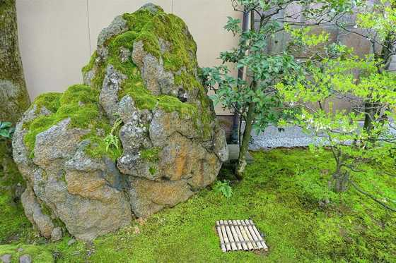
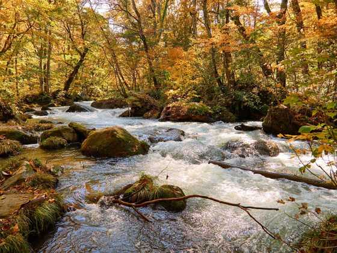

口コミ
イメージ写真 / 撮影地: 石川県(信楽ではありません)。
このページの内容は、実際のお客様の声ではありません。口コミページのイメージをご覧いただくための創作例です。
掲載している写真は、フリー素材のイメージです。264cafe の実際の店内・メニュー・外観ではありません。信楽以外の場所で撮影されたものや、撮影地が不明なものを含みます。
- イメージ例
山あいへ向かう道を進むうちに、気持ちが少しずつ静かになっていくように感じました。ひと息つきたいときに、また立ち寄りたいと思いました。
- イメージ例
器やお茶のたたずまいを眺めながら、ゆっくり過ごせたように感じました。急がず、自分のペースで時間を使えたのがうれしかったです。
- イメージ例
出かける前に電話で問い合わせることができて、安心して向かえたと感じました。わからないことを聞けるのはありがたいです。
実際のご感想は、掲載をご希望の場合に許可をいただいたうえで差し替えます。

イメージ写真 / 撮影地: 青森県(信楽ではありません)。